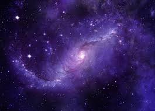
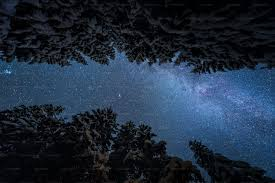

Es la ciencia que se dedica al estudio de os cuerpos celestes que existen en el universo, com por ejemplo: las estrellas, los meteoritos, los planetas,etc.
 
Los cuerpos celesten se encuentran en cada rincon de nuestro universo y más, de estos cuerpos celestes hay ciertos tipos que son de los más conocidos, a continuación tenemos un pequeño listado: Tipos de cuerpos celestes
________________________________________________________________________________________________________________________________________________________
La astronomía es la ciencia que estudia los astros o cuerpos celestes, su posición, movimientos, los fenómenos que los rodean y, en definitiva, todo lo que se encuentra en el espacio exterior.
La astrología también estudia la posición y los movimientos de los astros, y por eso ambas palabras comparten raíz, pero lo hace bajo la creencia de que la configuración del cielo influye en los eventos terrestres o en los seres humanos y en sus vidas.
Las afirmaciones de la astronomía se basan en la observación real y son empíricamente demostrables (siguen el método científico) y, en cambio, la astrología combina la observación con la interpretación, la intuición y la superstición.
En consecuencia, solamente los descubrimientos hechos por la astronomía pueden considerarse válidos y fiables.
________________________________________________________________________________________________________________________________________________________
Cada cultura, desde los egipcios hasta los mayas, pasando por los griegos y romanos, interpretaba estos luminosos puntos en la bóveda celeste y creaba mitos para explicar lo incomprensible.
Los seres humanos siempre han sentido curiosidad por el universo. En la antigüedad, la gente veía el cielo como un gran lienzo en el que proyectaban historias de sus dioses, héroes y monstruos. Las constelaciones eran parte del lenguaje que usaban para contar sus mitos y leyendas. Por ejemplo, Orion era un cazador poderoso en la mitología griega, y allí sigue, con su faja de tres estrellas brillando en el cielo nocturno.
Los astrónomos han estado observando algunos de los planetas de nuestro sistema solar durante miles de años. Los antiguos astrónomos griegos bautizaron a los planetas que podían ver a simple vista con el nombre de algunos de sus dioses y diosas . Los llamaron Hermes, Afrodita, Ares, Zeus y Cronos.
Es fascinante pensar cómo mitos de diferentes culturas se reflejan en las mismas estrellas. Pegaso, el caballo alado, Andrómeda, que fue salvada por Perseo, o Escorpio, que fue enviado para acabar con Orion, son solo algunas de las constelaciones que tienen su origen en estas leyendas ancestrales.
Las estrellas también eran utilizadas como un calendario celeste. La aparición y la posición de ciertas estrellas y constelaciones marcaban eventos importantes, como el cambio de estaciones. Las Pléyades, por ejemplo, eran un indicativo de la llegada de la primavera y tiempo de siembra para los agricultores.
________________________________________________________________________________________________________________________________________________________
La constelación de la Osa Mayor es seguramente la más popular de todas. Sin embargo, no tiene el mismo nombre en todo el mundo: en algunos lugares se la conoce como la Sartén, el Arado, el Carro o el Gran Cazo.
La constelación está acompañada de otro conjunto de estrellas con una forma muy parecida pero de menor tamaño: la Osa Menor. La historia de esta pareja de osas tiene como protagonista a Zeus, rey de los dioses según la mitología griega.
Zeus estaba casado con Hera, la diosa del matrimonio, pero tenía muchas aventuras. De su relación con la ninfa Calisto nació Arcade. Cuando Hera se enteró de lo ocurrido, transformó a Calisto en un oso (la Osa Mayor).
El destino hizo que Arcade se cruzara con su madre, ya convertida en oso, y como no la reconoció la apuntó con un arco y una flecha. Cuando estaba a punto de disparar, Zeus intervino y también convirtió en oso a Arcade (la Osa Menor). Para que ambas no se arañaran con sus garras, las agarró por la cola y las lanzó al cielo.
Cuando Hera supo lo que había ocurrido se enfureció. Fue a ver a su hermano Poseidón, dios de los mares, y le pidió que ni la Osa Mayor ni la Osa Menor pudieran bañarse en aguas celestiales: por eso ninguna de estas dos constelaciones desaparece nunca bajo la línea del horizonte.
________________________________________________________________________________________________________________________________________________________
La constelación de Orión es también otra de las más populares. En este conjunto de estrellas se encuentran algunos de los astros más brillantes que podemos ver desde la Tierra.
Hay varias leyendas sobre la constelación de Orión, aunque la mayoría le relatan como un cazador junto a los dioses Apolo o Artemisa de la mitología griega.
Sin embargo, en todas está representado como un guerrero alzando su arco o espada y con un escudo que le cubre. A su lado le acompañan dos perros de caza: Canis Maior y Canis Minor.
________________________________________________________________________________________________________________________________________________________
La constelación de Andrómeda guarda una galaxia entera y, además, se trata del objeto más lejano que podemos divisar con el ojo humano.
Produce una luz de muy baja intensidad, que apenas puede verse, pero ahí está: a más de 2.500 millones de años luz de la Tierra.
Andrómeda era la hija de los reyes Cefeo y Casiopea. Su madre ofendió al dios Poseidón y la única forma de aplacar su ira era entregando a la joven Andrómeda como sacrificio a un monstruo marino . Por eso la mitología griega representa a Andrómeda atada a una roca en el mar.
Sin embargo, el héroe Perseo la vio encadenada y se enamoró de ella. Pidió a su padre, el rey Cefeo, la mano de la bella dama a cambio de matar al monstruo.
________________________________________________________________________________________________________________________________________________________
La madre de Andrómeda,la reina Casiopea, se creía más bella que las Nereidas, las ninfas del mar. Por eso Poseidón (el dios de los mares) quiso castigarla y la condenó a permanecer atada a una silla en los cielos que la mitad del tiempo estaba boca abajo.
En el cielo se la puede reconocer con una curiosa forma que recuerda la de una M o una W, que representan el cuerpo sentado de Casiopea
________________________________________________________________________________________________________________________________________________________